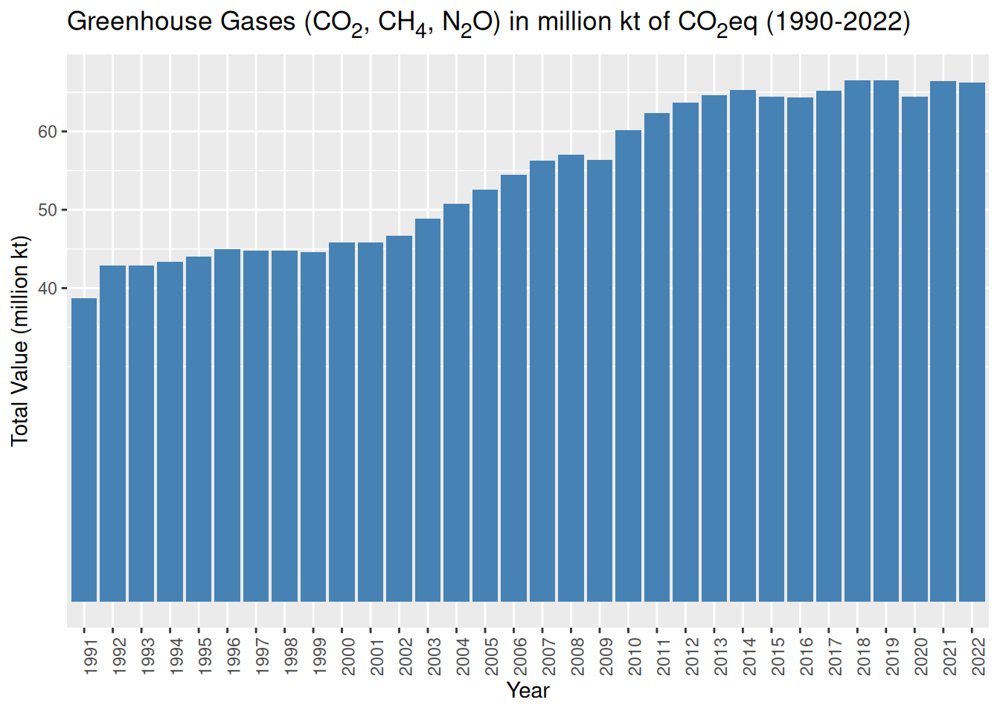

| Code | Sector |
|---|---|
| 3.B.1.a | LULUCF - Forestland |
| 3.B.1.b | LULUCF - Net Forest conversion |
| 3.B.2 | LULUCF - Drained organic soils (CO2) |
| 3.B.6.a | LULUCF - Fires in organic soils |
| 3.B.6.b | LULUCF - Forest fires |
| 3.C.1.c | Agriculture - Savanna fires |
| 3.C.5 | Agriculture - Drained organic soils (N2O) |
| 3.A.1 | Agriculture - Enteric fermentation (Emissions CH4) |
| 3.A.2.a | Agriculture - Emissions (N2O) (Manure applied) |
| 3.A.2.b | Agriculture - Manure management (Emissions N2O) |
| 3.A.2.c | Agriculture - Manure management (Emissions CH4) |
| 3.C.6 | Agriculture - Manure left on pasture (Emissions N2O) |
| 3.C.4 | Agriculture - Synthetic Fertilizers |
| 3.C.1.a | Agriculture - Burning crop residues (Emissions CH4) |
| 3.C.1.b | Agriculture - Burning crop residues (Emissions N2O) |
| 3.C.7 | Agriculture - Rice cultivation (Emissions CH4) |
| 3.C.8 | Agriculture - Crop residues (Emissions N2O) |
PolOpT Emissions Database Construction
Datasets and approaches (DRAFT FOR DISCUSSION)
Abstract
Through a series of reproducible data processing routines, different sources are combined into a single database that aims to lower the barrier of entry to emissions analysis for Computable General Equilibrium and Input-Output practitioners who work with national macroeconomic datasets that lack this dimension (social accounting matrices or supply and use tables). While this efforts is initially intended to provide ESA’s Policy Optimization Modelling Tool (PolOpT) with emissions data, other analysts, officers and initiatives from the environmental accounting space can benefit from it.
Introduction
The Monitoring and Analyzing Food and Agricultural Policies (MAFAP) program seeks to establish country owned and sustainable systems to monitor, analyze, and reform food and agricultural policies to enable more effective, efficient and inclusive policy frameworks. Since policies are only enacted when they are properly funded, FAO’s Policy Optimization Tool (PolOpT) (Sánchez and Cicowiez 2022, 2023) is particularly geared towards helping countries—the agricultural public sector, in particular—optimize public budgets in the face of competing objectives, like economic growth, poverty reduction, better nutrition, or increasing yields, for example.
In the face of increasing vulnerability, climate risk mitigation and adaptation objectives have also become a part of the policy dialogue, as different international commitments (e.g. the Paris Agreement) present new demands and challenges to governments. To be able to provide objective functions within MAFAP tools, it has become necessary to extend its socioeconomic reach to include environmental objectives. As an extension of the MAFAP CGE modelling tool, the Global Emissions Database aims to provide a seamless integration of data on anthropogenic emissions of greenhouse gases and air pollution with structural analysis frameworks like Computable General Equilibrium and Input-Output models.
Here we describe the approach used to construct an anthropogenic emissions accounting satellite framework by economic activity and driver, using globally available datasets. We aim to maintain compatibility with the System of National Accounts (SNA) with which economic performance is measured (European Commission et al. 2009). Where possible, we adopt approaches suggested by previous efforts at harmonization between Greenhouse Gas Inventories and SEEA pilot implementations (Eurostat 2015; Flachenecker, Guidetti, and Pionnier 2018; Gutman et al. 2024).
Emissions from combustion are estimated at the economic activity level using the International Industrial Standard Classification—ISIC—(United Nations 2008) and driver, using the Tier 1 method of the Intergovernmental Panel on Climate Change—IPCC—(IPCC 1996, 2006) and energy use information from the Energy Statistics Database (UNSD 2023). Emissions from Industrial Processes and Waste come from EDGAR (Crippa et al. 2023) and are mapped to economic activities following a broadly tested global approach that facilitates use with CGE frameworks; i.e. that of the Global Trade Analysis Project—GTAP—(Aguiar et al. 2019; Chepeliev 2024). Emissions from Agriculture are sourced from FAOSTAT (FAO 2024) and mapped to ISIC economic activities. Individual drivers are left for the practitioner to map to their own structure (i.e. output by industries, endowment by industries, input use by industries, and consumption by households).
Methodology
Overview
Our goal is to leverage valuable emissions data from different sources and we have scripted data processing routines to ingest original datasets in tabular format (mainly Excel Files and Comma Separated Values) and manipulate them to conform to a single flat file structure, using the R programming language (R Core Team 2024)1. The original datasets, translated into the much smaller size RDS binary format, as well as the processing scripts, are included with the resulting emissions database repository2.
Total Emissions from EDGAR
We start with the sourcing of The Emissions Database for Global Atmospheric Research—EDGAR—(Crippa et al., 2023) datasets published by the European Commission because they are comprehensive, covering most of the greenhouse gas emissions inventories domains as shown in Table 1, belonging to 1) energy; 2) Industrial processes and product use; 3) Agriculture, forestry, and other land use; 4) Waste; and 5) Other (mainly indirect emissions from deposition of Nitrogen). This allows us to provide an overview of the coverage needed by our dataset. However, due to the form in which the data is presented in the EDGAR data and our database needs, we only take advantage of emissions data on industrial processes, waste, and “other” (which refers mainly to emissions from the atmospheric deposition of nitrogen). To avoid double counting, we replace emissions from the use of energy (Chapter 1A) with data from the UN Energy Database (UNSD 2023) and emissions from agriculture, forestry, and other land use with data from FAOSTAT (FAO 2024). For comparison purposes, it is important to note that large scale biomass burning with Savannah burning, forest fires, and sources and sinks from land-use, land-use change and forestry (LULUCF) are not covered in EDGAR, but are in FAOSTAT.
| Code | IPCC Greenhouse Gas Inventory domain |
|---|---|
| 1.A.1.a | Main Activity Electricity and Heat Production |
| 1.A.1.bc | Petroleum Refining - Manufacture of Solid Fuels and Other Energy Industries |
| 1.A.2 | Manufacturing Industries and Construction |
| 1.A.3.a | Civil Aviation |
| 1.A.3.b_noRES | Road Transportation no resuspension |
| 1.A.3.c | Railways |
| 1.A.3.d | Water-borne Navigation |
| 1.A.3.e | Other Transportation |
| 1.A.4 | Residential and other sectors |
| 1.A.5 | Non-Specified |
| 1.B.1 | Solid Fuels |
| 1.B.2 | Oil and Natural Gas |
| 2.A.1 | Cement production |
| 2.A.2 | Lime production |
| 2.A.3 | Glass Production |
| 2.A.4 | Other Process Uses of Carbonates |
| 2.B | Chemical Industry |
| 2.C | Metal Industry |
| 2.D | Non-Energy Products from Fuels and Solvent Use |
| 2.E | Electronics Industry |
| 2.F | Product Uses as Substitutes for Ozone Depleting Substances |
| 2.G | Other Product Manufacture and Use |
| 3.A.1 | Enteric Fermentation |
| 3.A.2 | Manure Management |
| 3.C.1 | Emissions from biomass burning |
| 3.C.2 | Liming |
| 3.C.3 | Urea application |
| 3.C.4 | Direct N2O Emissions from managed soils |
| 3.C.5 | Indirect N2O Emissions from managed soils |
| 3.C.6 | Indirect N2O Emissions from manure management |
| 3.C.7 | Rice cultivations |
| 4.A | Solid Waste Disposal |
| 4.B | Biological Treatment of Solid Waste |
| 4.C | Incineration and Open Burning of Waste |
| 4.D | Wastewater Treatment and Discharge |
| 5.A | Indirect N2O emissions from the atmospheric deposition of nitrogen in NOx and NH3 |
| 5.B | Fossil fuel fires |
Source: authors based on Crippa, et al. (2023).
EDGAR datasets contain disaggregated information for the elements in the table above in Gigagrams for CO2, CO2 from biofuels, CH4, N2O, and Fluorinated greenhouse gases (F-Gases) PFC, HFC, HCFC, and NF3. However, while they provide a single dataset with aggregate GHG emissions expressed in CO2eq using the Global Warming Potential values of the Fifth Assessment Report of the IPCC with a 100-year horizon, all gases are summed into a single figure for each element in Table 1, not distinguished from the individual shares of CO2 tons equivalent contributed by each gas. For that reason, we used the individualized datasets per gas in Gigagrams and performed the Global Warming Potential AR5 calculation ourselves using coefficients from Myhre et al. Myhre et al. (2013), except for F-Gases, for which the conversion was made by EDGAR and kept separate as needed.
| Gas | Global Warming Potential Values AR5 100-year horizon |
|---|---|
| Methane (CH4) | 28 CO2 tons equivalent / Gigagram |
| Nitrous Oxide (N2O) | 265 CO2 tons equivalent / Gigagram |
Source: Myhre et al. (2013, 731).
As explained above, while the Edgar dataset is very comprehensive, it lacks the disaggregation by driver (intermediate input, output, endowment, or consumption) to satisfy the needs of CGE studies, when it comes to energy and certain agricultural aspects. That means that it is possible to identify to which volume of the IPCC a certain emission value belongs, but not which fuel product is responsible for it. For example, we can identify that CO2 emissions are emitted by the Road Transportation sector, but not whether the emissions come from the burning of Diesel or from Bioethanol or any other fuel type. For that reason, we replace the values related to energy with those from our own estimates using the United Nations Energy Database and default emission factors, as well as those elements related to agriculture and LULUCF with emissions data from FAOSTAT at the driver level (explained in the FAOSTAT section below). For completeness, the remaining domains; i.e. industrial processes, waste, and others are linked to total output of specific economic activities, using the International Standard Industrial Classification (United Nations, 2008) where possible (see Table 3).
| IPCC Code | IPCC | ISIC Code | ISIC |
|---|---|---|---|
| 2.A.1 | Cement production | 2394 | Manufacture of cement, lime and plaster |
| 2.A.2 | Lime production | 2394 | Manufacture of cement, lime and plaster |
| 2.A.3 | Glass Production | 2310 | Manufacture of glass and glass products |
| 2.A.4 | Other Process Uses of Carbonates | 9999 | Undetermined |
| 2.B | Chemical Industry | 2011 | Manufacture of basic chemicals |
| 2.C | Metal Industry | 2410 | Manufacture of basic iron and steel |
| 2.D | Non-Energy Products from Fuels and Solvent Use | 9999 | Undetermined |
| 2.E | Electronics Industry | 2640 | Manufacture of consumer electronics |
| 2.F | Product Uses as Substitutes for Ozone Depleting Substances | 9999 | Undetermined |
| 2.G | Other Product Manufacture and Use | 9999 | Undetermined |
| 4.A | Solid Waste Disposal | 3821 | Treatment and disposal of non-hazardous waste |
| 4.B | Biological Treatment of Solid Waste | 3822 | Treatment and disposal of hazardous waste |
| 4.C | Incineration and Open Burning of Waste | 3822 | Treatment and disposal of hazardous waste |
Emissions from Agriculture and LULUCF
Data on CO2, CH4, and N2O emissions from Agriculture, Forestry, and Other Land Use, including Land Use Change were sourced from FAOSTAT3. The level of disaggregation of its individual datasets allows us to identify the driving agricultural product (crop) or endowment (animal assets or cropland area) behind the emission of a specific gas. Since values are expressed in kilotons (kt) of each GHG, we converted them to Global Warming Potential AR5 for a 100-year horizon using the values in Table 2. To facilitate the mapping to CGE and Input-Output frameworks, we added a correspondence to individual ISIC economic activities responsible for the emission, where possible.
FAOSTAT datasets go beyond the elements stipulated in the third category of an IPCC inventory, and provide information on energy use by the agricultural sector, as well as emissions from industrial processes and waste. Since we source those from EDGAR for all economic sectors, we only use data from the domains shown in Table 4 from FAOSTAT.
More importantly, the reason why we replaced the data from EDGAR on agriculture emissions with FAOSTAT is because of the ability to differentiate the different drivers of those emissions, as well as the separate totals by gas. Table 5 shows the different elements from FAOSTAT available for practitioners to map to inputs, outputs, endowments, or consumption.
| Code | Driver |
|---|---|
| 0015 | Wheat |
| 0027 | Rice |
| 0044 | Barley |
| 0056 | Maize (corn) |
| 0071 | Rye |
| 0075 | Oats |
| 0079 | Millet |
| 0083 | Sorghum |
| 0116 | Potatoes |
| 0156 | Sugar cane |
| 0176 | Beans, dry |
| 0236 | Soya beans |
| 0946 | Buffalo |
| 0960 | Cattle, dairy |
| 0961 | Cattle, non-dairy |
| 0976 | Sheep |
| 1016 | Goats |
| 1049 | Swine, market |
| 1051 | Swine, breeding |
| 1052 | Chickens, layers |
| 1053 | Chickens, broilers |
| 1068 | Ducks |
| 1079 | Turkeys |
| 1096 | Horses |
| 1107 | Asses |
| 1110 | Mules and hinnies |
| 1126 | Camels |
| 1177 | Llamas |
| 2012 | Manufacture of fertilizers and nitrogen compounds |
| 9997 | Undetermined from LULUCF |
| 9998 | Undetermined from Agriculture |
Greenhouse Gas Emissions from Stationary and Mobile Combustion
A choice was made to estimate emissions from combustion, although the global datasets that we use already have this information in the aggregate, because it was important to be able to distinguish between the different fuels driving the combustion and the sectors in which this happened. Greenhouse gas emissions from fuel combustion and fugitive emissions were estimated applying Tier 1 coefficients from the 2006 IPCC Guidelines for National Greenhouse Gas Inventories to national information on fuel uses from the United Nations Energy Database (UNSD 2023) using Equation 1. We first applied conversion factors from units of volume (metric tons) to Terajoules from Definitions, Units of Measure and Conversion Factors (United Nations 1987).
\[ E_{GHG,fuel} = C_{fuel} * F_{GHG, fuel} \tag{1}\]
Where:
- \(E_{GHG,fuel}=\) Emissions of a given GHG by type of fuel (kg GHG).
- \(C_{fuel}=\) Amount of fuel combusted (TJ).
- \(F_{GHG, fuel}=\) default emission factor of a given GHG by type of fuel (kg gas/TJ).
The UN dataset is organized according to the standard construction of Energy Balances and it features transactions related to supply, imports, stock variation, exports, transformation, industrial, and final use of all energy resources. In order to estimate emissions we focused on 39 energy resources subject to combustion or fugitive emissions (shown in Table 6), as well as 88 energy transactions.
| Domain | Elements |
|---|---|
| Commodities | Animal waste, Anthracite, Aviation gasoline, Bagasse, Bio jet kerosene, Biodiesel, Biogases, Biogasoline, Black liquor, Blast furnace gas, Brown coal, Lignite brown coal, Lignite brown coal- recoverable resources, Brown coal briquettes, Charcoal, Coke-oven coke, Coke oven gas, Coking coal, Ethane, Fuel oil, Fuelwood, Gas coke, Gas oil/diesel oil, Gasoline-type jet fuel, Gasworks gas, Hard coal, Coal, Kerosene-type jet fuel, Lignite, Liquefied petroleum gas (lpg), Motor gasoline, Municipal waste, Naphtha, Natural gas (including lng), Natural gas, Other bituminous coal, Other coal products, Other hydrocarbons, Other liquid biofuels, Vegetal waste, Peat (for fuel use), Petroleum coke, Refinery gas. |
Results
The resulting database reports GHG emissions in thousand metric tons (kt) of CO2eq using the 100-year Global Warming Potential (GWP) of the IPCC’s Fifth Assessment Report (AR5) for 220 countries or territories. We provide three formats for practitioners’ convenience. A long format (what other efforts term “normalized”), where ISIC sectors are laid out in a single column, with a single column of values, a pivot format, where ISIC sectors (including an “undetermined” category) are arranged in columns of data values. In these two datasets, ISIC codes, ISIC descriptions, subsector codes and subsector descriptions have been concatenated into a single field for convenience. We also provide a long format version with all possible fields disaggregated, which was used to create both the long and pivot versions. These fields are:
- Area: Country or territory name.
- ISO3: Three-digit ISO country/territory name.
- IPCC Code: Greenhouse gas inventory code, according to IPCC Guidelines.
- IPCC: Greenhouse gas inventory description, according to IPCC Guidelnines.
- Category: Description of the emissions element within the larger IPCC Code.
- Emission Type: While everything is presented in kilotons of CO2 equivalent, this field allows the user to identify the gas responsible for the emission, which can be CO2, CO2 from biofuels, N2O, CH4, HFC, HCFC, PFC, SF6, NF3.
- ISIC Code: International Industrial Classification of All Economic Activities, Revision 4, code for observations where it is possible to assign a specific activity and “9999” for undetermined.
- ISIC: International Industrial Classification of All Economic Activities, Revision 4, description for observations where it is possible to assign a specific activity and “Undetermined” where not.
- Subsector Code: Some observations provide economic activity information at an aggregation which is smaller than the smallest ISIC level, specifically for specific crops and animal productions (FAOSTAT). We repeat the ISIC Code for those observations outside of agriculture that don’t have this description for correct ordering of the pivot dataset.
- Subsector: The description of the code above.
- Driver: For the energy sector (those for which the
IPCCcolumn starts with 3.A) it is possible to identify the specific fuel that was combusted, which generated the emission and it is presented here4. - Unit: A single value “kt” as metadata for all observations. In a previous version, we included animal and land endowments as reference and these where identified as “An” for number of animals and “Ha” for hectares. This was removed to avoid confusion for users when calculating totals.
- Value: The numeric value of the observation in thousand metric tons “kt” (Gigagrams).
Figure 1 shows Greenhouse Gas emissions for the period 1990-2022 in the resulting database. For the last year, total emissions in the database are of about 66.3 million kt CO2eq. This is about 13.3 million kt CO2eq more than the 53.0 reported by Edgar (Crippa et al. 2023). This is because we have data on GHG emissions for some non-sovereign territories, like American Samoa (USA) or Réunion (FRA), for example, that are also reported with their respective countries total.

We use the case of Nigeria to exemplify differences between datasets in Table 7. The first column shows the result of our PolOpT Emissions Dabase, the second shows the original Edgar dataset values, the third one shows a modified version of EDGAR, in which the whole section of agriculture has been replaced with FAOSTAT data (although for this comparison we removed the LULUCF part from FAO), and the last column shows the values of the World Bank World Development Indicators (only for Greenhouse Gases CO2, CH4, and N2O in CO2eq). The rows show the different emission types. Variations between datasets range from less than 1% to more than 30%. While variations remain stable with CO2 and N2O, CH4 is more volatile. At the same time, there is a complete discrepancy between our dataset and the Edgar based calculations of CO2bio, which at this point we only can attribute to differences in elements considered for this sector, as EDGAR documentation regarding this matter appears vague in the main publication (Crippa et al. 2023). In our case, the CO2 emissions of the combustion of bio jet kerosene, biodiesel, biogasoline, charcoal, biogases, bagasse, fuelwood, other liquid biofuels, animal waste, municipal waste, and vegetal waste were considered CO2bio, while their CH4 and N2O emissions were classified together with the emission of those gases of all other fuels. It is important to note that the confidence intervals for Tier 1 coefficients leave room for ample variation, and can vary up to +/- 30% and +/- 60%. This means that our estimates are still in the range of uncertainty when compared to other efforts.
| Emission Type | PolOpT EMDB | EDGAR | EDGAR + FAOSTAT | World Bank |
|---|---|---|---|---|
| Emissions (CO2) | 131,965.5 | 130,106.6 | 128,646.0 | 130,110.0 |
| Emissions (CO2bio) | 191,576.3 | 543,631.7 | 517,496.7 | |
| Emissions (CO2eq) from CH4 (AR5) | 156,627.5 | 197,002.7 | 194,163.5 | 204,080.0 |
| Emissions (CO2eq) from N2O (AR5) | 33,692.3 | 35,333.4 | 37,630.8 | 35,330.0 |
| Emissions (CO2eq) from HFC (AR5) | 11,985.9 | 11,985.9 | 11,985.9 | |
| Emissions (CO2eq) from HCFC (AR5) | 46.5 | 46.5 | 46.5 | |
| Emissions (CO2eq) from PFC (AR5) | 0.0 | 0.0 | 0.0 | |
| Emissions (CO2eq) from SF6 (AR5) | 679.7 | 679.7 | 679.7 | |
| Total | 526,573.6 | 918,786.5 | 890,649.1 | |
| Only GHG | 322,285.2 | 362,442.7 | 360,440.3 | 369,520.0 |
An important value added to the underlying data sources of PolOpT Emissions Database is an initial classification of emissions according to ISIC sector. This is important, because it allows practitioners of Computable General Equilibrium analysis to bridge this data with Social Accounting Matrices (which are the databases for such analyses). We made the choice to disregard the information on intermediate and final consumption of energy of industries outside the energy production and transformation sectors found in energy balances, because in the conventions of those instruments, fuels consumed by any sector for transportation purposes gets aggregated into the road sector, but that does not coincide with the corresponding ISIC classification for road transportation. Because of that, we pooled together all consumption and classified it as “Undetermined” for practitioners to assign it according to input shares of fuels by economic activities. Table 8 shows this exercise for Nigeria in 2022.
| Sector | Total |
|---|---|
| 0111. Growing of cereals (except rice), leguminous crops and oil seeds | 198,849.0 |
| 0112. Growing of rice | 896,700.4 |
| 0113. Growing of vegetables and melons, roots and tubers | 4,962.2 |
| 0114. Growing of sugar cane | 1,672.5 |
| 0141. Raising of cattle and buffaloes | 3,346,015.8 |
| 0142. Raising of horses and other equines | 77,396.6 |
| 0143. Raising of camels and camelids | 75,022.2 |
| 0144. Raising of sheep and goats | 648,522.9 |
| 0145. Raising of swine/pigs | 259,291.5 |
| 0146. Raising of poultry | 158,453.0 |
| 0220. Logging | 14,038.8 |
| 0510. Mining of hard coal | 263,922.3 |
| 0610. Extraction of crude petroleum | 1,953,433.9 |
| 0620. Extraction of natural gas | 523,127.9 |
| 0910. Support activities for petroleum and natural gas extraction | 100,474.7 |
| 1910. Manufacture of coke oven products | 3,507,043.8 |
| 1920. Manufacture of refined petroleum products | 1,505,629.4 |
| 2011. Manufacture of basic chemicals | 1,094,095.5 |
| 2029. Manufacture of other chemical products n.e.c. | 1.4 |
| 2310. Manufacture of glass and glass products | 12,762.8 |
| 2394. Manufacture of cement, lime and plaster | 2,813,460.8 |
| 2410. Manufacture of basic iron and steel | 2,394,064.8 |
| 3510. Electric power generation, transmission and distribution | 23,065,891.4 |
| 3520. Manufacture of gas; distribution of gaseous fuels through mains | 197,802.2 |
| 3530. Steam and air conditioning supply | 115,526.4 |
| 3600. Water collection, treatment and supply | 989,345.6 |
| 3821. Treatment and disposal of non-hazardous waste | 1,246,392.3 |
| 3822. Treatment and disposal of hazardous waste | 106,145.5 |
| 4661. Wholesale of solid, liquid and gaseous fuels and related products | 2,941,353.6 |
| 5110. Passenger air transport | 345,567.2 |
| 9999. Undetermined | 17,404,528.9 |
Conclusion
As part of FAO’s Policy Optimization Tool (PolOpT) (Sánchez and Cicowiez 2022, 2023), we sourced data from EDGAR (Crippa et al. 2023), FAOSTAT (FAO 2024), and the United Nations Energy Database (UNSD 2023) to provide a bridge between emissions information and social accounting matrices for Computable General Equilibrium analysis. We have created a consistent database, that allows practitioners to extend their studies to include environmental tradeoffs of economic and social policies.
References
Aguiar, Angel, Maksym Chepeliev, Erwin L. Corong, Robert McDougall, and Dominique van der Mensbrugghe. 2019. “The GTAP Data Base: Version 10.” Journal of Global Economic Analysis 4 (1): 1–27. https://doi.org/10.21642/JGEA.040101AF.
Chepeliev, Maksym. 2024. “Chapter 13A: CO2 Emissions from Fossil Fuels Combustion.” http://www.gtap.agecon.purdue.edu/resources/res_display.asp?RecordID=7130.
Crippa, Monica, Diego Guizzardi, Federico Pagani, Manjola Banja, Marilena Muntean, Edwin Schaaf, William Edward Becker, et al. 2023. “GHG Emissions of All World Countries.” Luxembourg. https://publications.jrc.ec.europa.eu/repository/handle/JRC134504.
European Commission, International Monetary Fund, Organisation for Economic Co-operation, Development, United Nations, and World Bank. 2009. “System of National Accounts 2008.” https://unstats.un.org/unsd/nationalaccount/sna2008.asp.
Eurostat. 2015. “Manual for Air Emissions Accounts.” Luxembourg. https://ec.europa.eu/eurostat/web/products-manuals-and-guidelines/-/KS-GQ-15-009.
FAO. 2024. “FAOSTAT Domain Emissions Totals.” Rome. https://www.fao.org/faostat/en/#data/GT.
Flachenecker, Florian, Emmanuelle Guidetti, and Pierre-Alain Pionnier. 2018. “Towards Global SEEA Air Emission Accounts: Description and Evaluation of the OECD Methodology to Estimate SEEA Air Emission Accounts for CO2, CH4 and N2O in Annex-I Countries to the UNFCCC.” Paris. https://doi.org/10.1787/7d88dfdd-en.
Gutman, Verónica, María Priscila Ramos, Carlos Adrián Romero, Martina Chidiak, Gustavo Adolfo Ferro, María Laura Ojeda, Exequiel Romero Gómez, Juan Ignacio Mercatante, María Paula Covelli, and Verónica Fernández. 2024. “Integración de Información Climática y Económica En Los Sistemas Estadísticos Nacionales: Armonizando Los Inventarios Nacionales de Gases de Efecto Invernadero (INGEI) Con El Sistema de Contabilidad Ambiental y Económica (SCAE).” Buenos Aires. https://ojs.econ.uba.ar/index.php/DT-IIEP/issue/view/500.
IPCC. 1996. “Revised 1996 IPCC Guidelines for National Greenhouse Gas Inventories.” London. https://www.ipcc-nggip.iges.or.jp/public/gl/invs4.html.
———. 2006. “2006 IPCC Guidelines for National Greenhouse Gas Inventories.” Geneva. https://www.ipcc-nggip.iges.or.jp/public/2006gl/pdf/4_Volume4/V4_02_Ch2_Generic.pdf.
Myhre, Gunnar, Drew Shindell, Francois-Marie Bréon, William Collins, Jan Fuglestvedt, Jianping Huang, Dorothy Koch, et al. 2013. “Anthropogenic and Natural Radiative Forcing.” Switzerland. https://www.ipcc.ch/site/assets/uploads/2018/02/WG1AR5_Chapter08_FINAL.pdf.
R Core Team. 2024. R: A Language and Environment for Statistical Computing. Vienna, Austria: R Foundation for Statistical Computing. https://www.R-project.org/.
Sánchez, Marco V., and Martín Cicowiez. 2022. “Optimising Policies to Achieve Agricultural Transformation Objectives: An Application for Ethiopia.” Journal of Applied Economics 25 (1): 765–83. https://doi.org/10.1080/15140326.2022.2056407.
———. 2023. “Optimal Allocation of Agriculture’s Public Budget Can Improve Transformation and Healthy Diets Access in Ethiopia.” Journal of Policy Modeling 45 (6): 1262–80. https://doi.org/10.1016/j.jpolmod.2023.09.005.
United Nations. 1987. “Energy Statistics: Definitions, Units of Measure and Conversion Factors.” Studies in {Methods} 44. New York: United Nations Department of Economic; Social Affairs, Statistical Office. https://unstats.un.org/unsd/publication/SeriesF/SeriesF_44E.pdf.
———. 2008. “International Standard Industrial Classification of All Economic Activities: Revision 4.” New York: UN Department of Economic; Social Affairs. Statistics Division. https://unstats.un.org/unsd/classifications/Econ/isic.
UNSD. 2023. “Energy Statistics Database 2021: Notes on Sources.” https://unstats.un.org/unsd/energystats/pubs/yearbook/2021/metadata.pdf.
Footnotes
R was chosen for its information management and data compression facilities. However, the principles used can be easily implemented in Python, Stata, or any other language with similar affordances.↩︎
The data is available at: https://renatovargas.github.io/emdb/download.html↩︎
Datasets are available at https://www.fao.org/faostat/en/#data under the heading “Climate Change: Agrifood systems emissions”.↩︎
Subsector and Driver both refer to individual products, but are laid out separately in our case, because of the specific needs of PolOpT Social Accounting Matrix structures that disaggregate agriculture activities with more detail. Other databases, such as GTAP (Aguiar et al. 2019; Chepeliev 2024), combine these into a single field where they are all identified as “drivers” and add a second field that describes which type of driver it refers to (input, output, endowment, or final consumption). Creating such a structure is trivial here by removing the agricultural drivers from the
Drivercolumn (for those where IPCC code starts with 3) and copying over the elements from theSubsectorcolumn.↩︎